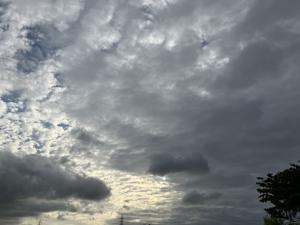

うるがいの話 ある日
最新: 屋上防水工事始まる【うるがいの話 ある日】とは 一日だけのプログです
『うるがいの話』の最新一日だけのプログで、通信料が少なく経済的だ。カニの画像をクリックすると全ての日付が載る『うるがいの話』サイトを表示します
|
|
【うるがいの話】 うるがい(ｳﾙｶﾞｲ urugai)とは、『もずくがに』の名前でとても大きくなります。 |
|---|---|
|
|
【カミマヤーの話】 猫のことを方言でマヤーといいます。カミマヤー（kamimayaa）とは、神の猫のことです。 |
|
【たながぁの音楽】 たながぁ（ﾀﾅｶﾞｰ tanagaa）とは手長えびのことで、何種類かあり大きいのは車 エビぐらいになります。 |

|
【ぶながぁの話】 ぶながぁ(ﾌﾞﾅｶﾞｰ bunagaa)とは、赤い髪の毛、赤い身体、そして身長は１ｍ２０ｃｍ ぐらい、川の蟹を食べているの目撃された。場所は沖縄県国頭郡大宜味村のと ある村僕の隣近所に住んでいる爺さんから、聞いた話です。 |
|
|
【ギーマの話】 ギーマ(giima)とは、山原の里山に咲くスズランに似た、 花を付けます。実は食べられます、 気が付くと口の周りが紫になっています。 |
2023年11月15日 (水）屋上防水工事始まる
16:04

朝８時１０分に業者のトラックが、早着いた。足場から現場を確認した後、工
事をする上での調整があった。壁に打ち込まれていた錆びた鉄を、取っていい
ですか？（ヘチマのネットをはるために、以前業者につけてもらたったものの
一度も利用せず、今となっては不要）、窓枠のスレンレスを固定しているネジ
が錆ているので外せません、付けたままでペンキ塗りします（オー、錆びるん
だ）など。代替の段取りと、おおよその日数を確認する。６工程で、日数は防
水を施す場合、材料が天気に作用されるので日数は天気しだい。今日は、洗浄
の前に天井の汚れを、落としてからになるので洗浄は明日になると思います。
と言われたが、午後から洗浄を開始した。ウルサイ！、当たり前だが、お隣さ
んのところと比較にならない。
１６時００分 ビットコインの総資産 ￥１５、５５３（↓６１３）